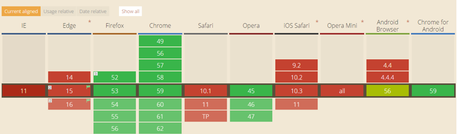
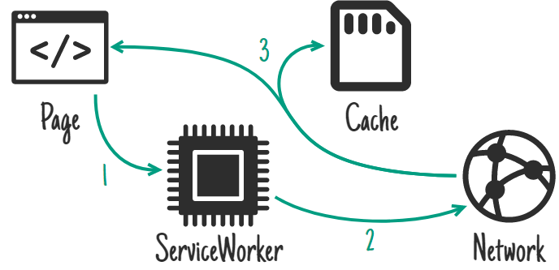
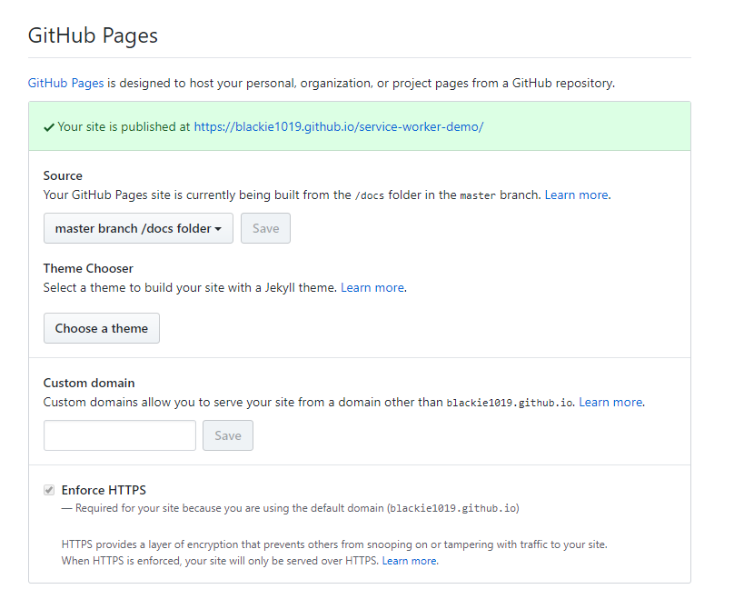
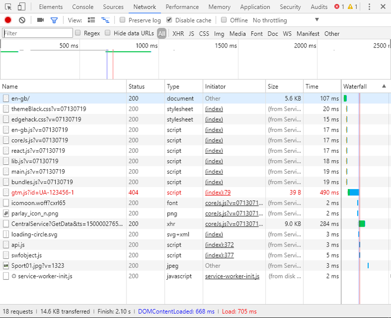

介紹 Service Worker 並分享如何實作 Service Worker 來幫網頁建立快取加速頁面回應
Service Worker 是一個可程式化的網頁代理(programmable network proxy)，可以協助你自訂 Request 的處理流程與來源，決定是要從遠端來源或是緩存區內取用與何時取用/更新該資料。
透過 Service Worker 可以幫助我們有效的加速相同資源 第二次 之後的資源請求，當我們關閉browser cache也是能生效的。
因為網頁的資源可以被我們建立以下幾層緩存而加速(請求由上而下訪問):
- Service Worker
- Browser Cache
- Host Server Cache(e.g. IIS, nginx)
- Application Cache(e.g. ASP.NET application caching)
- Shared Cache(e.g. Redis)
這邊有助於我們在架構上的規劃與效能上的大幅提升。而對於雲端部屬已經是趨勢的情況下，每個 request 都要算成本。能減少越多 request 訪問主機除了讓我們速度能提升之外，也能大幅度的降低主機服務的開銷。
在開始前有興趣先體驗一下速度差異的朋友可以至 Trained-to-thrill 這個網站感受一下(記得先關閉browser的cache功能才能體驗到差異)。
以下內容的教學投影片請參考，完整原始碼請參考service-worker-demo，範例線上成果。
Service Worker Introduction
在開始實作前，稍微介紹一下整個技術的背景與觀念。
What is Service Worker
Service Worker 本身是一個 JavaScript Worker，它本身不具備直接訪問網頁DOM的能力，但可以做為背景執行並透過pub/sub的概念進行DOM操作。
Service Worker 在實作上是借用了 HTML5 的 LocalStorage 與 IndexDB 功能來建置一個查詢索引與緩存資源，所以在網頁的相容性上也要有所資源才可以使用(目前僅Chrome有支援 Service Worker)
而Service Worker 的觸發邏輯與事件都是可以添加與客製修改的，可以控制與決定每個 Request 是要到緩存區內做置放做下次使用還是透過競爭模式決定使用遠端或是緩存區內的資源、也可以設定啟用的過濾條件。
Prerequisite for Implementation
它的主要使用限制有3+1:
- Service Worker 僅能針對客戶端(client)請求進行攔截與處理，無法從服務端(server)推播至客戶端。但可以建立更新機制去主動定期取得最新資源。
- Host 該網頁應用程式的服務需支援 SSL 連線。
- 作用域與註冊該檔案的位置有關，如果從根目錄註冊則所有子目錄的作用才可生效
- 目前瀏覽器僅 Chrome 與 Firefox 支援(IE應該不打算支援)，瀏覽器相容性可以至
http://caniuse.com/#feat=serviceworkers與Jake Archibald’s is Serviceworker ready site查詢確認。

How does Service Worker optimize Website performance
- 建立 cache ，將特定資源儲存至緩存內，可減少 Request 請求每次都找遠端來源取得回應
- 透過緩存區的架構，當資訊已建立在緩純區內，可以實踐部分離線網頁程式應用(如果剩餘功能不需連線也可以使用)
Service Worker life cycle
這邊解說一下 Service Woker 的生命週期:
詳細說明，可以參考這個解說:
How does Service Worker optimize Website performance
這邊我們可以思考幾個情境下能夠透過 Service Worker 來幫助我們，以下整理來至於Jake Archibald : The offline cookbook
- Cache only
- Network only
- Cache, falling back to network
- Cache & network race
- Network falling back to cache
- Cache then network
- Generic fallback
- ServiceWorker-side templating
Service Worker Case Study
這邊簡單擷取幾個來自 Jake Archibald 的那篇文章中提及的情境與對應的架構設計
On install - as a dependency
On install - not as a dependency
On activate
On user interaction
On network response

Stale-while-revalidate
如果有興趣透過原生 JavaScript 與 HTML API 可以參考 Jake Archibald 的實作:
- Cache on install, for the static UI and behaviour
- Cache on network response, for the Flickr images and data
- Fetch from cache, falling back to network, for most requests
- Fetch from cache, then network, for the Flickr search results
Implment Service Worker by sw-tool
再次提醒一下，目前瀏覽器僅支援 Chrome 與 Firefox，且 Host 主機需支援 SSL 連線才可以啟用該功能。
Github Pages 正好是 HTTPS 的，所以我們可以透過它來幫我們建立靜態頁面來測試 service worker 的好地方。
先前提到，Service Worker 的實踐其實可以透過 HTML5 就可以達成，而為了加速開發我們這邊的實作是藉由 sw-toolbox來幫我們實作底層。
sw-toolbox 是由 Google 所開發的 Service Worker 工具，協助我們快速實作相關功能。
npm 安裝 sw-toolbox 套件
npm install --save sw-toolbox註冊當前的 service worker 檔案(注意你希望作用的範圍與註冊有關)
1
navigator.serviceWorker.register('my-service-worker.js’);
動態加入 sw-toolbox
1
importScripts('node_components/sw-toolbox/sw-toolbox.js');
Handlers
toolbox.networkFirst
先採用網路調用遠端資源，若無回應才改用緩存區
toolbox.cacheFirst
先採用緩存區調用已存檔之資源，若無回應才改用網路調用遠端
toolbox.fastest
緩存區與網路調用遠端同時觸發，採用先提供回應者之結果。若網路調用遠端成功回應則可設定存回緩存區做更新。
toolbox.cacheOnly
只使用緩存區資源
toolbox.networkOnly
只使用網路遠端調用資源
Method
Router related
1
2
3toolbox.router.<get|post|put|delete|head>(urlPattern, handler, options) //註冊特定 Method 狀態之路由設定
toolbox.router.any(urlPattern, handler, options) //註冊全域路由設定
toolbox.router.default //設定預設Cache related
1
2
3toolbox.precache(arrayOfURLs) //執行緩存區前之資料
toolbox.cache(url, options) //緩存區之資料
toolbox.uncache(url, options) //釋放緩存之資料
Live Demo
Github 的 Repo 有一個特殊結構，開一個 doc 資料夾，並在設定啟用 github page 的功能即可將此目錄的內容變成靜態頁面並提供SSL連線。

程式碼結構則如下:
index.html
1 |
|
service-worker_sbk.js
1 | (global => { |
完整原始碼請直接參考service-worker-demo，範例線上成果。
當我們訪問該網站時，可以透過 Chrome 來看是否註冊 Serivce Worker 成功:
如果註冊成功後在 Chrome 的網路資源這邊就可以發現很多來至於 Service Worker 的回應資料:
Before and After Comparison for Real Case
最後我們來看一下實務上改善的成果，先大致上說明改善的架構:
這邊是將頁面的前端資源依據使用情境與開發職責分成四類，由於跟目錄皆相同，所以透過單一個註冊點進行 Service Worker 註冊。
而以下是改善的對比:
這是一開始還沒改善前，我們可以看到第一次進入該網站或是關閉瀏覽器快取的情況下，總共有17個請求，1.4 MB 的檔案傳輸量與 3.53 秒的載入時間。整個網站則是要在 5.27秒 後才完成全部載入。
當我們加入Service Worker的第一次至該網頁瀏覽時，因為網頁還沒註冊與建立 Service Worker 緩存區，所以整體速度與先前差不多。
而當我們將部分前端資源建立Service Worker後(廠商開發的程式碼未納入Service Worker)，在當前資源已被快取的情況下，總共有18個請求，45.4 KB 的檔案傳輸量(進步3100%)與 784 毫秒的載入時間(進步450%)。整個網站則是要在 3.24秒 後就完成全部載入(進步163%)。

而當我們將全部前端資源建立Service Worker後(廠商開發的程式碼也納入Service Worker)，在當前資源已被快取的情況下，總共有18個請求，14.6 KB 的檔案傳輸量(進步9820%)與 705 毫秒的載入時間(進步504%)。整個網站則是要在 2.10秒 後就完成全部載入(進步251%)。
看到這邊已經展現了 Service Worker 的強大能力，如果你的網站也是有許多資源或是大多屬於不會變更的資料，那就趕快來幫它加速一下吧。